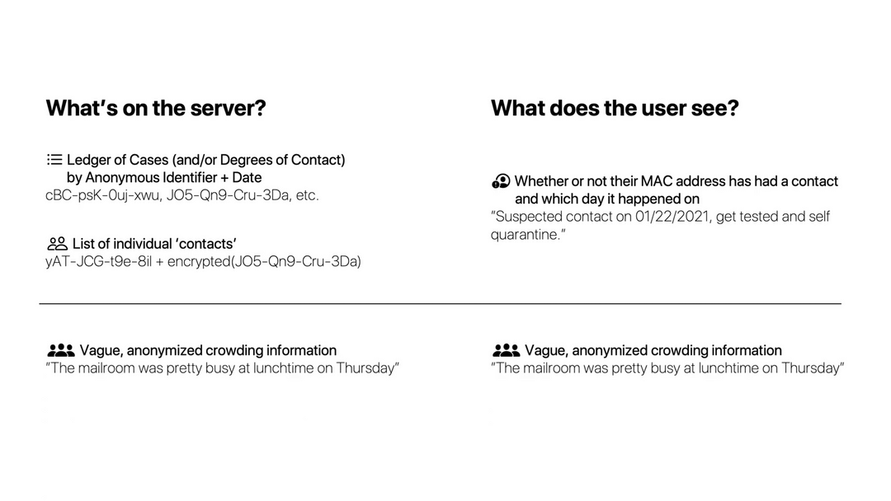

Crowds
Crowds was presented at Hack@Brown 2021, where it won the Wolfram Award.
Inspiration
Apple and Google have developed private and secure exposure notification options within their ecosystems and operating systems. However, these systems are open to the general public and require pre-enrollment. Only a fraction of the population is enrolled and even fewer choose to report their exposures. Within a closed environment, such as a school, university or large office - there has to be a solution that complements existing preventative measures (for example, Brown tests on-campus populations biweekly) to provide richer exposure notifications and campuswide data while maintaining user privacy. This would allow administrators to make more informed decisions.
What it does
Crowds has two functions: secure contact tracing, and providing crowding information.
Crowds traces contacts by finding nearby mac addresses on your local network; this allows users to input their mac address, and find any contacts they had even prior to enrolling in Crowds. This is the primary benefit of Crowds over other contact-tracing apps; users can find contacts they may have had even prior to enrollment in the app. Mac addresses are stored on a server with a secure hashing and truncating algorithm.
As privacy is a major concern, the app explicitly displays to the user what data is stored on the server and what stays on your phone. On an opt-in basis, you can choose to use your phone as an ‘observer’ observing contacts on campus. You’re able to see the information stored locally on your phone and deleted, and exactly what is transmitted. This puts you in control of your data.
The server is secure; only equipped with your own private MAC address can you even query it to begin with, and the only information a user can obtain is whether or not there was a contact. For crowding information, we only store and provide vague locations and vague crowding data without any identifying information.
Crowding information is provided in the form of a heatmap which can be viewed from within the app. This allows users to stay safe and avoid high-risk areas.
How we built it
The app was built in Swift, using this Cluster pod to generate the heatmap.
MAC Addresses are encrypted via the Ali and Dyo approach. This algorithm uses a computationally expensive hashing function (in our case, BCrypt), salted with the date, and then truncates the resulting hash to produce a partial identifier for every device (wifi or bluetooth) on the network.
Each encrypted MAC address is stored alongside the user’s vague location and nearby network crowding information. Each of a user’s observed contacts is locally anonymized using a MAC address hashing and truncating algorithm, then encrypted using the full hash. This prevents anyone, even with full server-side knowledge, from reconstructing a contact’s graph of anonymized identifiers. Data is also deleted after 14 days.
Location and crowding information will be processed using Google Maps API and stored through Google Firebase for easy, secure access at each client. The server will only store vague location and crowding data, which is enough to construct the heatmap.
Challenges we ran into
One main challenge we ran into was determining how much data to store and what privacy tradeoffs we were willing to make with regards to what benefits we receive. We had to be conscious with ethical challenges concerning each user’s right to their own data and not have that stored on a centralized server or location, while maintaining the core contact tracing and crowding information data. We did manage to come up with a protocol and solution that, in our opinion, balances a heightened level of security and privacy along with functionality. Users are also given a clear user interface of what is being shared and what isn’t, so expectations are more than clear. This allows us to be transparent and efficient.
The cluster API used to create the heatmap also proved tricky to use for this purpose; we had to make some modifications to the API in order to allow it to display low, medium, and high crowding levels.
Accomplishments that we’re proud of
We’re proud that we were able to develop a method of contact tracing that manages to be more informative than current methods, allowing users to detect contacts made prior to enrollment in the app, while maintaining a high level of security and privacy of user data.
We’re also proud of the dashboard UI and heatmap; both look aesthetically pleasing and present data to the user in a clear manner.
What we learned
We learned about several interesting cryptography algorithms that make up for the shortcomings of many standard MAC address anonymization methods. We spent a lot of time brainstorming ways to securely store contact data resulting in many interesting ideas to implement.
What’s next for Crowds
Crowds is open to expansion and improvements. First of which, we hope to develop similar Android, Arduino and Pi apps that actually allow IoT devices to contribute to Crowds data. We also intend to improve upon our data security and privacy as to ensure user data is never used maliciously. We need endpoints for testing agencies to report positive cases of Covid into the system, and we intend to add an online checker that will allow one to check if they have been exposed without downloading the app.
Screenshots
